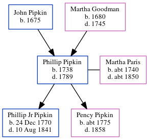

Phillip Asher Pipkin 1738 - 1789
[ Home ] | [ Calendar ] | [ Surnames Index ] | [ Census Index ] | [ Family History ]The child of John Pipkin and Martha Goodman, Phillip Pipkin, the 4 times great-grandfather of Michele Copp (née Phillips), was born in Chowan, North Carolina USA in 17381,2 and had 2 children with Martha Paris: Phillip jr and Pency Patrick. In 1790, he was living in Wayne, North Carolina4.
He died in 1789 in Pitt County, North Carolina, USA1,2,3.
Parents
- John was born in 1675
- Martha was born in 1680
Children
- Phillip jr was born on Dec 24, 1770
- Pency Patrick was born c. 1775
Citations
- Family Data Collection - Individual Records Online publication - Provo, UT, USA: The Generations Network, Inc., 2000.
- OneWorldTree Online publication - Provo, UT, USA: MyFamily.com, Inc.
- U.S., Find a Grave® Index, 1600s-Current Ancestry.com Operations, Inc. (Find a Grave. Find a Grave®. www.findagrave.com.)
- 1790 United States Federal Census Online publication - Provo, UT, USA: The Generations Network, Inc., 2000.Original data - Indexed from: United States of America, Bureau of the Census. Heads of Families at the First Census of the United States in the Year 1790. Washington, D.C.: Government
Family Tree
Generated by ged2site. Last updated on Jun 6, 2024